M3 reset, 50k steps (size S)
Source: results/m3_dreamer_s/train_metrics.json (1001 log ticks). Interactive — hover a step. PNG fallbacks live in figures/.
| Gate | Start | 50k | Read as |
|---|---|---|---|
| recon_l1 | 0.326 | 0.0095 | 97% drop; log-only, not the trained term |
| kl_rep_raw | 3.59 nats | 3.49 nats (peak 6.14 @ 16.7k) | Floor is 1.0 — not a setpoint |
| reward NLL | 5.63 | 0.077 | Held-out correlation r = 0.91 |
| continue BCE | 0.84 | 4e-4 | Log-y spikes are one terminal / batch |
M3 reset, 700k steps (same frozen replay)
Source: results/m3_dreamer_s/train_metrics.json (14,006 logs, every-5k downsample in data/metrics_700k.js). After ~500k the curve is a plateau, not a climb toward DreamerV3’s 1M env-step budget.
| Gate | 50k | 700k | Read as |
|---|---|---|---|
| recon_l1 (window) | 0.0095 | 0.0045 last-10k mean | Most of the drop was by 300k; 500k→700k is 3% |
| kl_rep_raw | 3.49 (peak 6.14 @ 16.7k) | ~1.96 last-10k mean | 0% of last 100k logs under the 1.0 floor |
| reward correlation r | 0.91 | 0.98 | M3 bar is 0.3 |
| open-loop imag std / obs | 0.99 | 0.98 | Prior is not a constant frame |
M4 actor-critic, 20k steps (frozen 700k WM)
Source: results/m4_actor_critic/train_metrics.json. No env.step. The λ-return climb is critic bootstrap (finding 10), not a Crafter score.
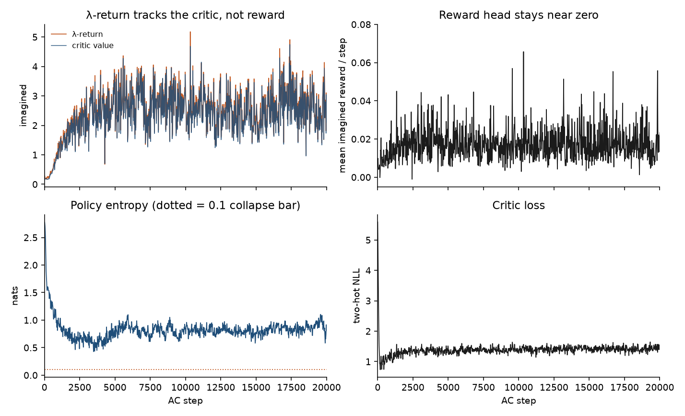
| Gate | Early | 20k | Read as |
|---|---|---|---|
| critic two-hot NLL | 5.59 | 1.47 (last-2k mean 1.43) | Fitted 255-bin head; plateau is not a stall |
| policy entropy | 2.78 nats | 0.81 (last-5k min 0.58) | Peaked, not collapsed; 0/1001 logs under 0.1 |
| imagined reward / step | 0.008 | 0.017 last-2k | Sparse frozen reward head; finite, not exploding |
| λ-return | 0.24 | 2.61 last-2k | Tracks value, not reward — do not cite as skill |
M5 outer loop (100k env steps)
Finished 2026-08-26. ckpt_latest.pt at 100000 env steps. Plumbing PASS. Skill plot is real eval return, not imagined λ-return — and that return is still not a Crafter score (finding 11). Episode-bounded replay; no is_first.
| Knob | Value | Read as |
|---|---|---|
| seeds | M3 700k WM + M4 20k AC + 600-ep dump | Do not retrain from scratch |
| ratio | 16 env / 1 WM / 1 AC | 6250 WM + 6250 AC updates |
| episode cap | 400 collect and eval | 10k + geo-mean is M6 |
| actions | STE sample, not greedy | Entropy last 0.943; 0 logs under 0.1 |
| notebook dashboard | was every 16 env steps + gc.collect | 18 → 1.1 env/s by 58k; after fix ~38 env/s. 60k→100k in 18 min |
| eval return | −0.65 → 0.10 (4 × 400) | mean_achievements − 0.9. 75k’s 0.35 is one extra unlock in the bag |
| online WM | recon L1 0.005 → 0.013; KL 2.1 → 6.1 | On-policy coverage, not the log-cadence change at 60k |
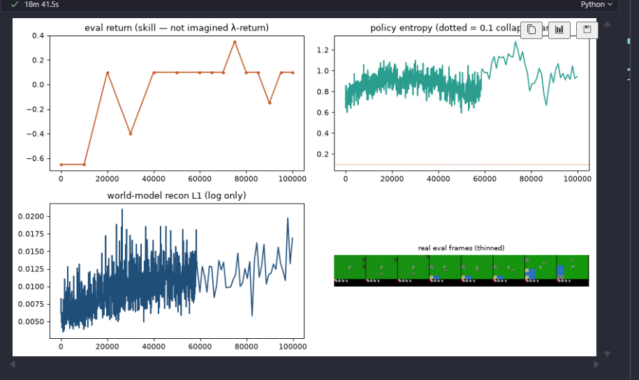
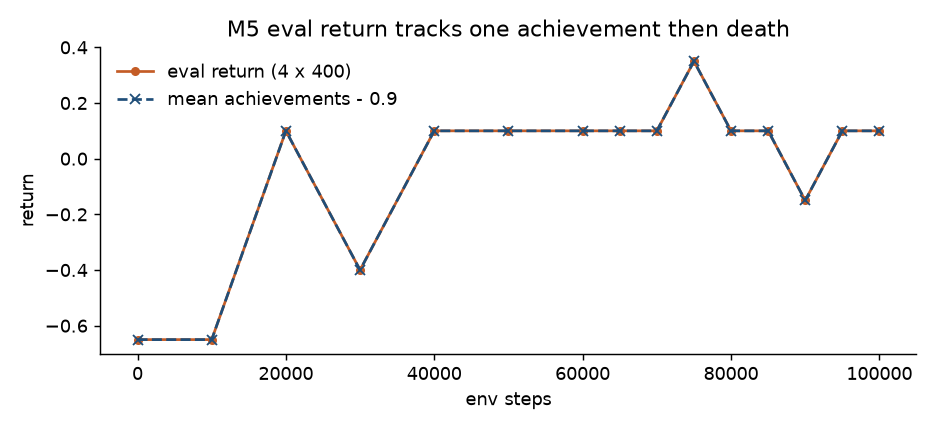
M6 Crafter baseline (1M env steps)
Finished 2026-08-26. Protocol PASS. Official gmean, not 4×400 return. Size-S, seq 32, FIFO 500k, continued from M5 100k. Do not put 1.64 next to DreamerV3 14.5 (finding 13).
| Knob | Value | Read as |
|---|---|---|
| held-out gmean | 0.627 → 1.639 (10 × 10k STE) | n=10 lottery; 900k’s 0.43 is a bad bag, not collapse |
| online gmean | 1.941 (4746 collect eps from resume) | The actual learning curve; buckets 1.4–2.1 |
| episode length | mean 190, max 441 | 10k cap never binds; they die (finding 12 idle again) |
| last eval unlocks | sapling 100, wood 60, plant 60, wake 40 | Stone / pickaxe 0. Survival, not diamonds |
| entropy | 0.533 last (min 0.22) | Above 0.1; protocol PASS is not a Crafter score |
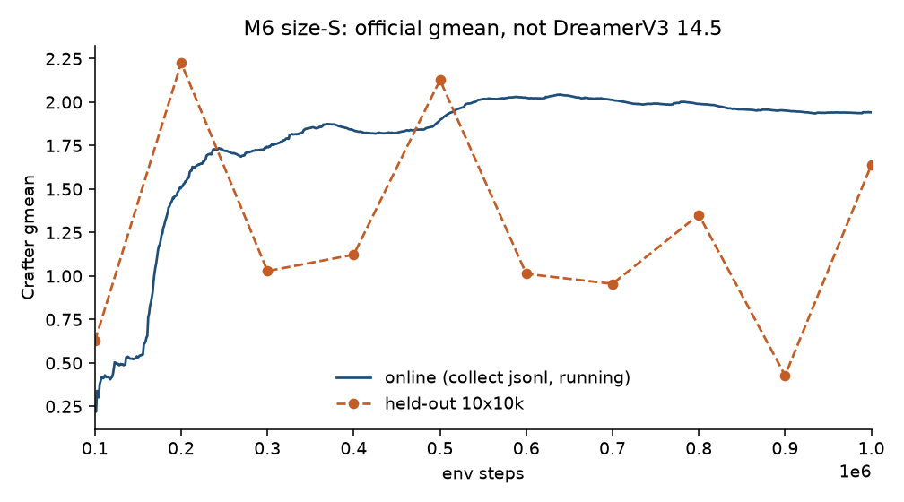
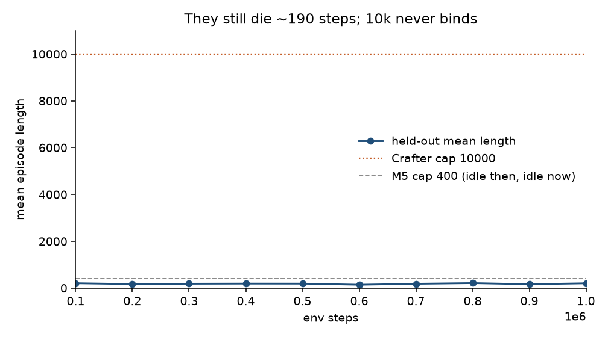
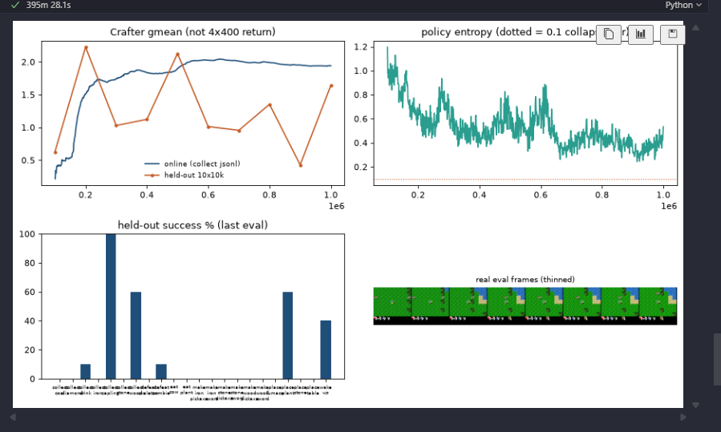
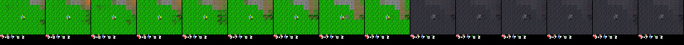
M7 paper-style online (stopped reading at 100k)
XL ~198M from scratch, fresh actor, 2026-08-27. Not a 14.5 run. Actor sat on the unimix floor by 20k env steps (finding 14). Do not grind to 1M.
| Knob | Value | Read as |
|---|---|---|
| held-out gmean | 1.298 → 0.233 | Worse than the random start, not a noisy orange line |
| 100k unlocks | wake_up 100, everything else 0 | They unlearned sapling/wood/drink/plant |
| entropy | 0.08 mean from 20–80k | Unimix floor for 17 actions. M6 never went below 0.22 |
| collect length | mean 163, max 399 | Still dying; 10k cap idle again |
| prefill | stops after one episode ≥ 32 | Not the documented 10k random seed |
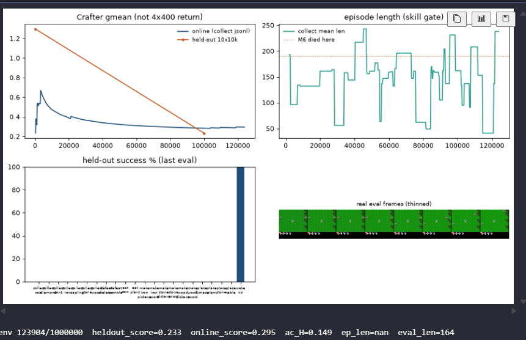
Why two weeks of extra losses could not work
The optimizer was solving a different problem than “train a DreamerV3 world model.”
Pre-reset graph
Pixel loss can fall on the left branch. The RSSM is optional.
Reset graph (what 50k trained)
No path reconstructs without z_posterior.
Findings
Reconstructions
Left: pre-reset 12k on the bypass graph. Right: reset 50k, one live decoder. Then 700k posterior / open-loop. Bottom row of video-pred is error (gray = good), not a dead prior.
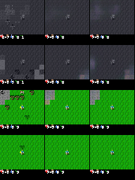
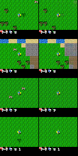
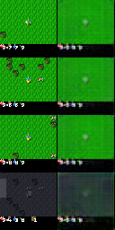
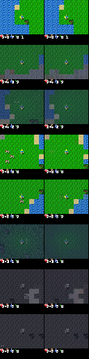
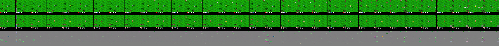
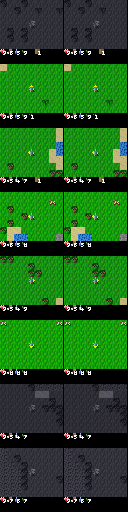
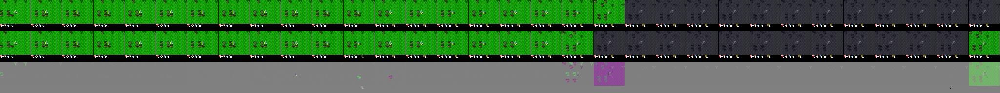
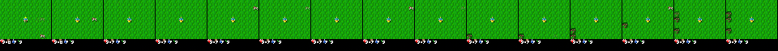
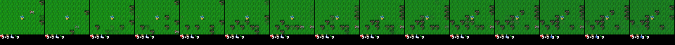
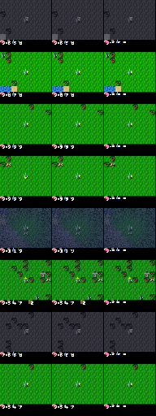
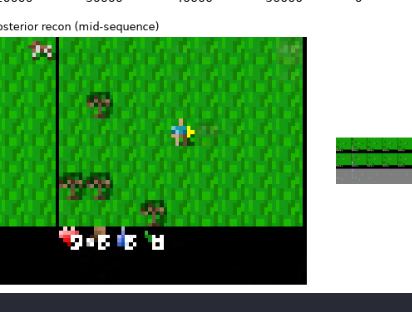
Do not revive
Each item failed for a documented reason in the findings. Re-adding it is how M3 stalled.